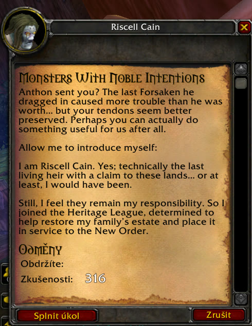
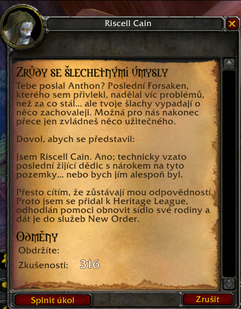
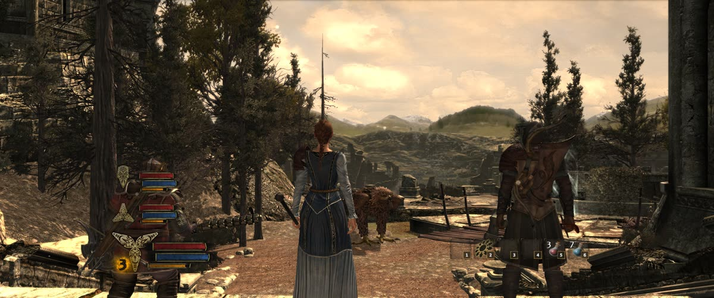
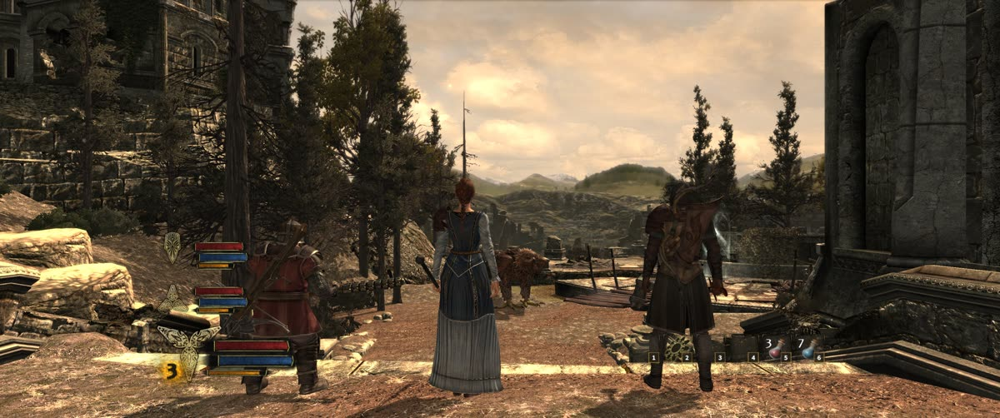

Tools & Experiments
Game mods · reverse engineering · utilities | Windows · C++ / Lua / Python
A running set of side projects: small, shipped tools that mostly exist because I wanted something that didn't exist yet. They lean into the parts of programming the game work doesn't always reach: native code, reverse engineering a closed format, and shipping to real users who then file real bug reports. Each one below is a short account of the actual problem and how it was solved, with the source linked.
KCD Permadeath: a native mod that works around a sandboxed scripting API
The Challenge
Kingdom Come: Deliverance 1 is a save-scumming game with no permadeath option, and its scripting API isn't built to add one. The engine's Lua has no file I/O, so a "lives" counter can't survive the death-and-reload it exists to police. The game never records which save you loaded, so "this run is over" has no subject. And the death event isn't exposed to scripts at all. Every obvious approach is a dead end.
The Solution
I built a two-part mod that talks to itself through the filesystem. A Lua script detects death and writes marker strings into the game's own log; a native C++ DLL, loaded as a proxy for a vendor DLL the game already pulls in, tails that log, counts lives, and on the final death hooks the game's game-over function so it shows the real ending screen, then archives that save folder (moved, never deleted). Surviving a reload uses a technique from zhiletka's KCD2 permadeath mod, which I credit in full: the DLL writes a console command to disk and the script runs it via exec, the only channel that persists across a load.
Code spotlight: patching a function that moves between game builds
The game-over function lives at a different address in the Steam, Epic and GOG
builds of WHGame.dll, same game version, different binaries. An early
release hardcoded one address and, on Epic, wrote a 15-byte jump into the middle of an
unrelated function; it didn't crash purely by luck. The fix is to stop trusting addresses:
scan the .text section for the function's first 32 bytes and refuse
to patch unless there's exactly one match. On an unknown build it declines and the
mod degrades to the ordinary death screen instead of corrupting the process.
// Find the game-over function by SIGNATURE, not by a hardcoded address --
// because Steam / Epic / GOG each ship a different WHGame.dll.
unsigned char* find_trigger_game_over(uintptr_t base)
{
const auto* dos = reinterpret_cast<const IMAGE_DOS_HEADER*>(base);
const auto* nt = reinterpret_cast<const IMAGE_NT_HEADERS64*>(base + dos->e_lfanew);
constexpr size_t kSigLen = sizeof(kSigTriggerGameOver); // 32-byte fingerprint
unsigned char* found = nullptr;
int hits = 0;
const auto* sec = IMAGE_FIRST_SECTION(nt);
for (int i = 0; i < nt->FileHeader.NumberOfSections && hits < 2; ++i)
{
if (memcmp(sec[i].Name, ".text", 5) != 0) continue; // code section only
auto* start = reinterpret_cast<unsigned char*>(base + sec[i].VirtualAddress);
const size_t len = sec[i].Misc.VirtualSize;
for (size_t off = 0; off + kSigLen <= len; ++off)
{
if (start[off] != kSigTriggerGameOver[0]) continue; // cheap reject
if (memcmp(start + off, kSigTriggerGameOver, kSigLen) != 0) continue;
if (++hits > 1) break; // a 2nd match = ambiguous
found = start + off;
}
}
if (hits != 1) { // 0 = unrecognised build, 2 = ambiguous
debug_log("game-over signature: " + std::to_string(hits) +
" matches -- refusing to patch this build of WHGame.dll");
return nullptr; // fail safe: no patch, normal death screen
}
return found;
}WoW Ascension: a Czech localization for a launcher-locked private server
The Challenge
Project Ascension, a heavily modified World of Warcraft (WotLK 3.3.5a) server, ships English-only. The obvious way to translate a WoW client, patching the text out of its MPQ data files, doesn't survive here: Ascension's launcher manages those files and reverts any edit on the next start. Anything meant to stick has to go through the addon API instead. And the one thing an addon can't reach, the spell tooltips baked into Spell.dbc, can't simply be swapped for the community Czech file either: Ascension's Spell.dbc holds ~87,000 rows to the Czech file's ~50,000, so a wholesale replace would delete ~37,000 custom Ascension spells and break the client.
The Solution
An addon-only Czech layer that installs by copying a folder and uninstalls by deleting it: no client files touched, fully reversible, and it works on any 3.3.5a server, not just Ascension. On top of the community base translation I layer my own hand-checked quest fixes for the 1-30 starting zones, corrected against Ascension's live quest database from real playtesting. For the tooltip text an addon can't reach, a set of Python tools handles the binary side: a localization-hook generator that only assigns keys (so any untranslated string keeps its English and nothing goes missing) with %s/%d placeholder-safety checks, and a Spell.dbc merger that overlays Czech onto Ascension's own file by row ID and appends to the string block so every untouched byte offset stays identical.
Credit where it's due: the base Czech text is community work I package and credit, not my own translation: it comes from wowpreklad.zdechov.net (export 37), and all credit for that base translation belongs to that project. What's mine is adapting and packaging it for Ascension, the hand-checked 1-30 quest fixes (my own translation, done while learning Czech), and the Python build and merge tooling below.


The same quest from the same NPC, addon off and on. The quest title and the full dialogue body are swapped at runtime through the addon API, down to the reward value staying identical (316 XP). No client file is modified, so the launcher has nothing to revert on the next start.
Code spotlight: merging Czech into an 87,000-row DBC without deleting custom content
A WoW .dbc is a flat binary table plus a string block; localized text is an
offset into that block. Ascension's Spell.dbc carries tens of thousands of
custom spells the Czech export has never seen, so the fix is to merge, not
replace: index the Czech rows by ID, and for every Ascension row that shares an
ID, append the Czech string to the existing block and re-point just that one field.
Append-only means every offset the tool doesn't touch stays byte-identical, and unmatched
custom spells keep their English text.
# Overlay Czech text onto Ascension's OWN Spell.dbc, preserving custom content.
# Ascension's file has 87,375 rows to the Czech file's 49,839 -- a wholesale
# swap would delete ~37,500 custom spells. So merge by row ID and APPEND strings,
# leaving every offset this tool doesn't touch byte-identical.
def merge_table(base_path, cz_path, out_path, fields):
base = DBC(base_path) # Ascension's DBC stays the base
cz = DBC(cz_path) # the Czech DBC is only a text source
cz_rows = {} # index the Czech rows by their ID (field 0)
for i in range(cz.rc):
cz_rows[cz.u32(i, 0)] = i
dedup = {}
for i in range(base.rc):
rid = base.u32(i, 0)
j = cz_rows.get(rid)
if j is None: # a custom Ascension spell -> leave it English
continue
for f in fields: # Name, Rank, Description, AuraDescription
text = cz.s(cz.u32(j, f))
if not text or not has_czech(text):
continue
off = dedup.get(text)
if off is None:
off = base.add_string(text) # append to the string block
dedup[text] = off
base.set_u32(i, f, off) # re-point only this field
base.save(out_path)War in the North: 21:9 / 32:9 for a game that hardcodes 16:9
The Challenge
The Lord of the Rings: War in the North (the Aspyr Legacy Edition on Steam) hardcodes a whitelist of four aspect ratios and throws away every display mode that isn't one of them, so ultrawide resolutions never even reach the menu. Three more places in the executable assume 16:9 on top of that. And even once a 21:9 mode is forced in, the game is Vert-: it keeps the 16:9 horizontal view and crops the top and bottom away, so the extra width costs you picture instead of adding any, while the HUD gets sliced off at the screen edges.
The Solution
A patcher that makes 13 verified byte patches to witn.exe. Two legacy 4:3/5:4 entries in the aspect whitelist are swapped for ultrawide and the match tolerance widened, so the whole 21:9/32:9 family passes. The GUI canvas and camera FOV math are rewritten to min(aspect, 16/9), which leaves everything at or below 16:9 bit-for-bit identical to the stock game and turns wider aspects into Hor+: the vertical view stays put and the extra width becomes extra world at the sides, with the HUD re-anchored so nothing is clipped. Every byte range is checked against the known build (SHA256-verified exe) before a single write, the original is kept as witn.exe.orig, and reverting is a file copy. The README is honest about what's left: the character-select camera is still stretched, shadows fade a little short of the far edges, and 4:3/5:4 modes are dropped because the whitelist is a fixed-size array with no room to add to.


The same location at the same resolution, before and after. Unpatched, a 21:9 screen shows exactly what 16:9 does and crops the top and bottom away; patched, the vertical view matches 16:9 and the extra width becomes extra world at the sides.
Code spotlight: writing into a checksum-guarded settings file
The exe patches are the headline; this is a smaller, self-contained piece. If the game has
a resolution saved that your monitor can't show, the menu becomes hard to escape, so the
patcher can write one straight into GameSettings.dat. That file guards itself
with a CRC32 over its own body, so you can't just poke new numbers in, the
game rejects a file whose checksum doesn't match. The fix is to validate the existing
checksum first (refuse if it's already off, rather than make it worse), write the
resolution, then recompute and repair the CRC.
# GameSettings.dat guards itself with a CRC32 over its own body:
# 0x00 uint32 crc32 of everything from 0x04 to EOF
# 0x04 uint32 version (9)
# 0x2C uint32 width 0x30 uint32 height
def cmd_set_res(args):
with open(GAME_SETTINGS, "rb") as fh:
buf = bytearray(fh.read())
ver = struct.unpack_from("<I", buf, 0x04)[0]
if ver != 9:
sys.exit("Unexpected GameSettings.dat version, not touching it.")
# refuse if the file is already corrupt; don't make it worse
if struct.unpack_from("<I", buf, 0x00)[0] != (zlib.crc32(buf[4:]) & 0xFFFFFFFF):
sys.exit("GameSettings.dat checksum does not validate, not touching it.")
struct.pack_into("<II", buf, 0x2C, args.width, args.height) # set resolution
struct.pack_into("<I", buf, 0x00, zlib.crc32(buf[4:]) & 0xFFFFFFFF) # repair the CRC
with open(GAME_SETTINGS, "wb") as fh:
fh.write(buf)